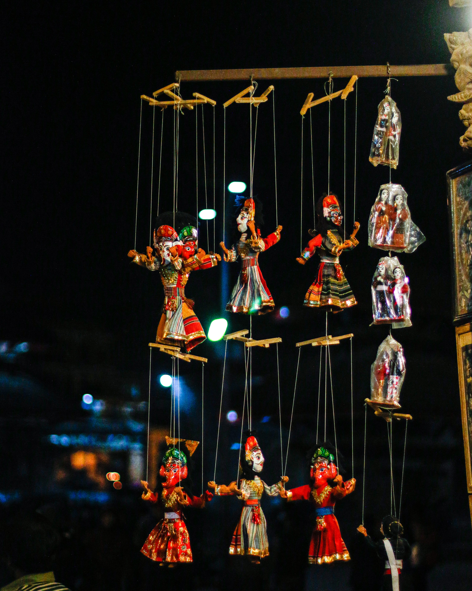

About Us

The Green Star Talent Kenya was founded in 2010 in Nairobi Kenya. The company was founded by 4 partners who run the organization upto today.
Green Star Talent Kenya came about due to many talents around our communities going unrecognized especially for less previleged members of our society. Our survey at that time discovered people from less privileged backgrounds had a lot of potential and are a big asset to the growth of our societies and the nation at large.
The biggest challenged however was how they could showcase their talents and careers. As a result Green Star Talent Kenya was born to offer a platform for anyone who would like to showcase their talents and careers. The program also help them to meet their daily needs as well cater for school fees, buy staionery and avail stipends for those in need of them the most and who have talents like drawing, singing, dancing, acrobatics etc.
VISION AND MISSION

Mission
Our mission as an organization is to impact people's lives positively so that they can be independent
potray what they possess. They can have a platform for themselves and also impact others positively.
Vision
Our vision as an organization is to lift the most vulnerable with talents out of poverty
and to create vital, healthy lives for themselves and others.